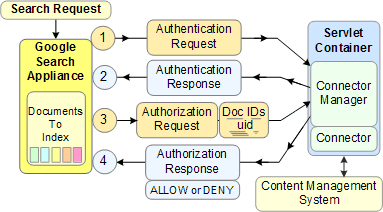

Google Search Appliance software versions 6.2
Connector manager version 2.4.0
Posted December 2009
This section:
For connector terminology definitions, see the Google Enterprise Glossary. This document complements the Javadoc provided at the Google connector manager open source code site.
Chapters: About This Guide, Introduction, Getting Started, SPI Overview, Traversing Documents,
Authentication, Authorization, Configuration, Appendix A: Building a Debug Connector Manager
A connector is a Java application that you create that contains methods and classes that the connector manager calls to perform the tasks of acquiring documents from a content management system, and authenticating and authorizing users to view search results.
The following illustration shows the relationship between a Google Search Appliance and a connector:
Components:
The connector manager is an open source Java application that manages communications between the Google Search Appliance and a connector.
The connector manager is provided in open source at http://google-enterprise-connector-manager.googlecode.com.
The connector manager is part of the Google Enterprise Connector Framework, which consists of the connector manager, SPI, Javadoc for the SPI, and Google support for the connector manager. Google provides open source code for the connector manager on a project code site with access to downloads, issue information, additional documentation, and discussion groups. You can return to the project code site regularly for software and documentation updates.
The connector manager provides the DocPusher implementation, which implements the Pusher interface in the connector manager. DocPusher processes documents from a connector and creates a feed source that is conveyed to the search appliance. The DocPusher enables connectors to add documents to or delete documents from the search appliance.
You can view the source code for DocPusher.java in the connector manager open source site.
The following picture shows how a document moves between a connector and a search appliance.
The components in this illustration are:
DocumentList.nextDocument method. DocPusher wraps the document in an XML structure and pushes the document as a feed source to the search appliance. For more information, see DocumentList Interface in the SPI Overview. PROPNAME_SEARCHURL property, DocPusher expects the connector to provide a metadata-and-URL feed. If the property is not set, then DocPusher expects the connector to provide a content feed.googleconnector:// URL for the documents in the feed source. DocPusher logs messages to the ${catalina.base}/logs/google-connectors.%g.log file where ${catalina.base} is the Apache Tomcat installation folder. The connector manager substitutes %g with a log generation in the format of google-connectors.*.log, with the logs written to the Tomcat log directory.
Another useful DocPusher log file is the Feed log, written to the ${catalina.base}/logs/google-connectors.feed%g.log file, which contains the XML Feed records pushed to the search appliance (without the content). The connector manager substitutes %g with a numerical value.
For more information, see Logging.
You can use the log file warnings and errors that DocPusher generates to diagnose problems in a connector, for example, DocPusher generates the following messages on the state of a connector:
<url> is malformedNote: If you see messages about not being able to send feeds, verify that the following in the Admin Console is correct:
^googleconnector:// statement.A connector consists of classes and helper methods that you code to implement the SPI. You also need to create Spring Framework XML files to describe connector components.
The connector manager uses Spring Framework to create an instance of a connector from the information you supply in the XML files.
To develop a connector, you need access to the following components:
When developing a connector, you can use a single computer for the connector host system and the development systems. When you install a connector in a production environment, the connector host is a distinct machine, such as a dedicated servlet container on your production network.
Before creating a connector, you need to understand the following topics:
Creating and deploying a connector consists of the following tasks:
connectorType.xml file to configure a connector type. For more information, see Configuration.connectorInstance.xml file to indicate to the connector manager how to instantiate your connector. For more information, see Configuration. The Spring Framework is an open source software application framework that the connector manager uses to create connector instances.
The following illustration shows how Spring Framework communicates with each connector component:

Communication process:
connectorType.xml file to instantiate the ConnectorType at the same time that Spring instantiates the context of the connector manager. When you develop your connector, you create the connector type that specifies the XHTML for a configuration form. ConnectorType object is consulted for the configuration form. .properties file. connectorDefaults.xml and connectorInstance.xml files. Spring Framework uses the bean definitions in the connectorDefaults.xml and connectorInstance.xml files to create a connector instance. The connector instance communicates with the content management system through its API.For information on the Spring Framework DTD, see spring-beans.dtd at SpringFramework.org.
The Spring Framework requires files that contain special XML tags and attributes that Spring uses to locate a connector and its components.
The following is an example of a Spring configuration file that identifies a connector:
<beans>
<bean id="helloworld-connector"
class="com.acme.connector.HelloWorldConnectorType">
</bean>
</beans>
Where:
id - Identifies the name of the bean--this name is unimportant. Spring uses this name internally. class - Indicates the location of the HelloWorldConnectorType.class object. Spring Framework provides Inversion of Control (IoC) to instantiate the connector manager and the connector.
Spring is available from http://www.springframework.org and the Spring version 2.5.6 .jar file that Google supports is available in the software distribution for the connector manager in the projects/connector-manager/third-party/prod directory.
SpringFramework.org provides resources for the enterprise Java community. See also the Introduction to the Spring Framework article, by Rod Johnson.
To work with Spring, you need Java J2SE version 1.5 or later.
You can provide connector type information in the connectorType.xml file and provide connector instance information in the connectorInstance.xml file:
connectorType.xml, connectorInstance.xml, and connectorDefaults.xml are Java Bean definition files.connectorType.xml and connectorDefaults.xml are invariant across all connector instances of that type, such that all connector instances derive information from a common connectorType.xml and connectorDefaults.xml.connectorInstance.xml and ConnectorName.properties file may contain configuration information that is unique to each connector instance. This information distinguishes one connector instance from another.The Spring Framework instantiates a connector as follows:
The server application starts followed by the connector manager's web application.
The startup servlet sets the servlet context and creates an XML web application context that engages the Spring Framework.
Spring Framework looks for the applicationContext.xml file in the WEB-INF/ directory and uses that XML file to instantiate all the beans defined in that file. The Spring beans in the applicationContext.xml file indicate the location of the connector manager and its classes.
Connector manager uses Spring to instantiate a connector type for each installed type of connector (for each connectorType.xml file found on the classpath).
connectorInstance.xml, connectorDefaults.xml, and the connector's .properties file.Connectors consist of the following separate component groups that provide the interaction between the Google Search Appliance and the content management system:
ConnectorType object provides an XHTML configuration form that administrators use in the Admin Console of a search appliance to specify information about how to contact a content management system and how often to acquire documents. You can optionally create the connectorDefaults.xml file to contain the default settings for properties in the configuration form. The connectorInstance.xml file only holds properties that are overriding properties whose default value is in connectorDefaults.xml.
The Admin Console creates the properties file, which is just a set of name and value pairs. For example, a properties file contains a user name and password, the name of a repository, the basis of the display URL, and other values. The properties file contains the values that correspond to each field in the configuration form.
Spring Framework injects the properties file, the defaults information (if present), and the information in the connectorInstance.xml file into the bean, which Spring Framework uses to create a connector instance.
Spring Framework:
connectorInstance.xml file.connectorDefaults.xml file.bean.Note: When you implement a connector, define setters for all properties.
For example if connector_name.properties contains "London Bridge is falling down":
In connectorInstance.xml:
<bean id="helloworld-connector"
class="com.example.connector.HelloWorldConnector"
parent="helloworld-connector-defaults">
<property name="repetitions" value="5"/>
</bean>
In connectorDefaults.xml:
<bean id="helloworld-connector-defaults">
<property name="text" value="${content}"/>
<property name="repetitions" value="1"/>
</bean>
The following illustration shows the steps that occur when an administrator adds a connector at the Admin Console:
The steps are as follows:
connectorType is to receive the request.ConnectorType.getConfigForm method to have the connector return an XHTML form in the ConfigureResponse class. The following illustration shows how a completed form is validated and either returned for corrections or completed:
The steps are as follows:
ConnectorType.validateConfig method to ensure that all required information is present. The validateConfig method can also test a connection to the content management system using the ConnectorFactory class to call Spring Framework to create a connector instance to verify that the connector can communicate with the content management system. A connector can also change properties as needed in the validateConfig method. validateConfig method fails, the connector returns a ConfigureResponse object that contains the XHTML form and a message to inform the administrator what corrections to make in the form. After the administrator fills in the information, this sequence repeats until the administrator specifies correct information.validateConfig method succeeds, the connector manager stores property information in the connector_name.properties file. The connector manager also creates a connector instance and sends acknowledgment to the search appliance. The following illustration shows what occurs when an administrator edits the information for an existing connector:
The steps are as follows:
connectorType as a parameter to the getPopulatedConfigForm method.ConnectorType.getPopulatedConfigForm method to construct the XHTML configuration form for the Admin Console. The getPopulatedConfigForm method should use the values in the supplied configuration Map to populate the XHTML form. A connector can acquire three components for each document that the connector gets from the content management system, the document itself, metadata that describes the document, and a URL that provides the document's location in the content management system. The connector manager packages this information into an XML wrapper and passes these components to the Google Search Appliance as a feed source. A connector either acquires all three components, which is known as a content feed. Alternatively, the connector can acquire just the metadata for a document and its URL, which is known as a metadata-and-URL feed.
The sections that follow provide more information about each feed type.
A connector using content feed works with the content management system's API to acquire a document for the search appliance to index, metadata for the document, and a URL that points to the document's location. The connector then requests documents from the content management system and the connector manager conveys the documents to the search appliance for indexing.
A connector with content feed performs the following tasks:
More information: Understanding Authentication and Authorization.
A connector using metadata-and-URL feed works with the content management system's API to provide a URL for the location of the document in the content management system and metadata associated with the document. The search appliance then crawls the content management system using the URL to locate the document.
A connector with metadata-and-URL feed performs the following tasks:
A content feed connector provides authentication and authorization services to enable users to view controlled-access documents. This section explains how a content feed connector handles authentication and authorization. For a metadata-and-URL feed connector, the search appliance handles authentication and authorization.
For a connector to authenticate correctly, a user must have the same user name and password at all content management systems served by the connectors that are associated with a single search appliance. That is, if you have two document sources that map to a user who has different credentials at each source, the search appliance can't serve from both sources.
The search appliance sends the URL for each document to the web client on the content management system along with the credentials of the user making a search request for controlled-access documents. The web client passes the request to the content server, which returns the document or an error message.
The following illustration shows the request and response sequence between the search appliance when a user requests to view controlled-access documents:

For a detailed explanation of each component, see Batch Authorization.
When a user requests a search of controlled-access content, an authentication request from the search appliance is sent to the connector manager, which sends back an authentication response from the connector communicating with the content management system. If the user is correctly authenticated, the search appliance requests authorization and the connector manager sends back a response from the content management system to either allow or deny a user's access to the requested content.
Authentication and authorization in a connector operate as follows:
googleconnector:// then the connector is called. If the URL does not start with googleconnector://, then authorization in the connector is not called. This is also a priority based algorithm. The googleconnector:// URL condition exists only in connectors using content feed. Authentication and authorization depend on the connector feed type:
For normal (non-connector-based) authorization, the search appliance combines authentication and authorization as follows:
More information: Authentication and Authorization
The methods in the ConnectorType interface support the Locale parameter. If you decided to localize your connector, you should add support for internationalization. The connector follows Java internationalization conventions. You need to add resource bundles as .properties files and build them into your connector.
The service provider interface supports the use of UTF-8 character sets.
The Admin Console provides scheduling for when a connector can traverse documents in a content management system with starting and ending times for traversal and the number of documents to traverse per minute.
If the connector manager does not receive content from a connector, the connector manager waits 5 minutes before asking a connector for updated content.
Because the connector manager can start and stop traversals for a connector while the connector manager manages multiple connectors, a connector must be interruptible. The connector manager monitors the state of a connector. The connector periodically saves a checkpoint string. The connector manager provides this string when restarting a connector. A connector may also store information in files on the file system.
The important consideration for a connector is that you do not handle scheduling in your connector. The search appliance and connector manager handle this for you.
More information: Traversing Documents, Checkpointing, File Access.
A search appliance displays search results as a web page that contains hyperlinks to content that matches a search query. By default, each search result provides a snippet of document content, metadata, or other data to help a search user decide whether the result is relevant.
The goal of the search results page is to give a user enough information to decide to navigate to the document.
For documents that come from connectors, when a user clicks a URL in the search results page, a connector can cause users to view:
You can control each target by how your connector sets the PROPNAME_DISPLAYURL property in your TraversalManager class.
More information: Metadata Properties and Traversing Documents.